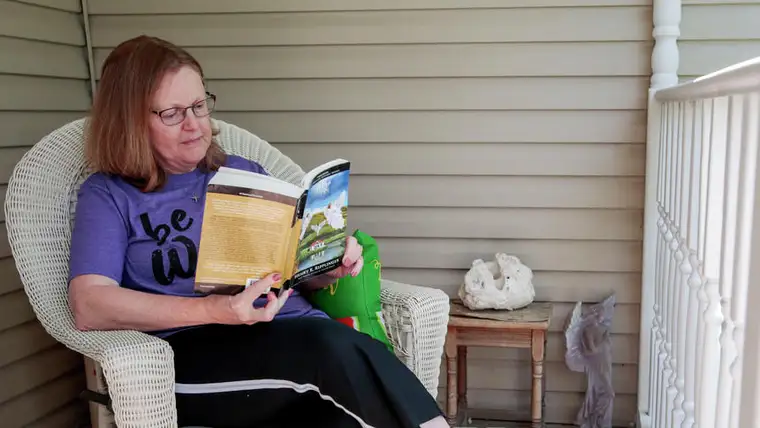

Erin Bormett / The Forum
WEST FARGO — When Willie Gartner retired after 43 years as a food broker, he finally had time to read, deciding to focus on Western and religious books.
But during a trip to Arizona, he ran out of both. At a book fair, he happened upon a series that intrigued him. The author was signing the books, so he bought the first one.
Gartner couldn’t put “Pewter Angels” down.
“Sometimes, I get goosebumps up my back when I’m reading them; that’s how good they are,” he says of the Angelic letters series by Canadian author Henry Ripplinger.
The books, which have a deep spiritual dimension, follow the love story and lives of main characters Henry and Jenny, who meet before their freshman year in high school. Though geared toward ages 14 to 99, Gartner says the books are being gobbled up especially by the elderly.
“My brother-in-law, at 82, got all the ladies in the nursing home reading it,” he says, noting that they’re drawn to the theme of forgiveness permeating the series. “A lot of them have held onto things in their lives. The story gives them a way to forgive.”
Though the author is Catholic, Gartner says, the books aren’t overtly so; many of his Protestant friends have appreciated the series, too. Certainly, it’s changed his life, spiritually and otherwise.
Gartner encouraged his parish, Holy Cross Catholic Church in West Fargo, to become a distributor. He even befriended the author, whom he talks to weekly.
‘A happy story’
Now 79, Ripplinger’s writing career didn’t begin until around 2005 after 20 years as a curator and businessman of an art-gallery complex in Regina, Saskatchewan, following an earlier stint as a teacher, then counselor, and becoming one of Canada’s foremost prairie artists.
His stories, according to his website, were motivated by “a powerful spiritual experience.” The series infuses his “empathetic abilities, lifelong experiences and eclectic career” into “a Christian, spirit-filled love story series” benefiting those seeking self-development.
“I truly believe this is a gift from the good Lord that he’s given me to pass on,” Ripplinger says of his work. “I’m amazed how the story folded so naturally, and the effect it’s had on so many people.”
About 300,000 of the books have been sold so far, he says, generating countless emails from people who claim the books have restored their faith. “They’ve become free of unforgiveness in their heart, and even people suffering from terminal illnesses have noted how it’s helped them.
“It’s a happy story in so many ways, and yet the trials come along that I find so many people identify with,” Ripplinger says, adding, “It’s my own personal search for meaning and developing a close relationship with Jesus and seeking the Holy Spirit that comes out through the characters’ lives.”
Searching
Local teacher Elizabeth Scott doesn’t have a lot of time for recreational reading during the school year, but she’s been immersed in the series this summer, reaching the final seventh book.
“I wish I would have read this series as a teenager,” she says, noting that it brings up all the ugliness and pain of the world, but also begs the question, “How can we be redeemed?”
Scott became interested when her pastor, the Rev. James Meyer, asked if the Catholic Daughters of America organization she leads at Holy Cross might take on book sales. Proceeds have benefited about 20 different community and state nonprofit organizations.
“(The series) is a lot about searching for who you are as a person, and why God created us,” she says, along with revealing how our guardian angels protect us.
Scott says she’s aware of negative reactions a few have had to the books, particularly regarding a scene addressing sexual assault early in the series. But it’s handled respectfully, she contends, recommending the scene be read in its entire context.
“There’s so much sin in the world, unfortunately,” she says, “but it’s more about, many years later, the forgiveness and healing that happens when these two lives are brought back together.”
As administrative assistant for Holy Cross, Margaret Keller has watched the books fly off the shelf in the parish hallway. Though it took her awhile to get into them, she says she was pulled into the series by the depth of emotion the characters experience and the important life lessons.
“One minute you’re mad at the books, then you can’t wait to read what happens next,” she says.
Keller knows of people who’ve returned to practicing their faith after a lapse just from reading the series. One man, a recovered alcoholic, told her the books helped him see how he can move forward and live differently the rest of his life.
She appreciates how the series provides a tool for passing on the good news of faith in God, encouraging those who already have faith to go deeper. “For a lot of us, God’s there, but we don’t really have him in the center.”
For instance, the books came to mind recently in talking to a man who’d just lost his wife. “I encouraged him to celebrate and lift her up, reminding him she was a gift from God.”
Local enthusiasts of the series are working on bringing Ripplinger to the area in the fall. In the meantime, the books can be purchased at Holy Cross, 2711 Seventh St. E., West Fargo, for $20 each or through the author’s website at www.henryripplinger.com.
[For the sake of having a repository for my newspaper columns and articles, I reprint them here, with permission, a week after their run date. The preceding ran in The Forum newspaper on July 28, 2018.]